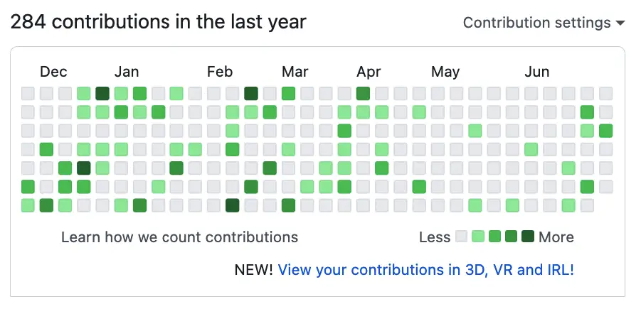

Learning Git: What To Know When You’re a Beginner¶
This is an article about Git and GitHub, in which we’ll also tell a story about a dinosaur and his yellow floppy disks. We begin with Git and GitHub, lest we get too interested in the story and forget the real subject of this article.
Git and GitHub are critical tools to know. For example, the exercises we publish are available there. Moreover, our cooperative coding boot camp (community) lets “new” programmers develop professional skills in a group of peers. Ensuring that everyone in the community can work effectively with Git and GitHub is a central part of that goal.
Fortunately, the basics of Git are not hard to learn, and you can quickly master those skills, especially if you commit to working them into your regular coding practice workflow.
Configuring GitHub is a bit more of a challenge for some new developers, but you may not find it too hard with a bit of instruction. One of the first publications we have planned for the community is a GitHub primer that will teach this to you – in the meantime, we’re happy to schedule some calls to walk some students through it.
Finally, once you’ve mastered the basics and set up an account, there’s still the matter of using Git with a team. Doing this means you learn git branching, merging, pull requests, code reviews, and many other tasks that are either too easy to ignore or difficult to practice if you’re learning and using Git on your own.
Git and GitHub: What’s The Difference?¶
If you haven’t yet dug into Git or GitHub, you may have questions about the difference between them. Let’s tart at the tool that’s more standalone: Git. A simple description of Git is that it is far and away the single most popular version control tool. Version control tools let you collaborate with other developers and efficiently track changes to a software project or any other set of files you might want to keep a history of (although it works best on text-based files like source code).
Although I mentioned collaboration with other developers, one of the strengths of Git is that it’s a distributed version control system, so it doesn’t rely on a central server to work. That means you can take full advantage of its features even if you’re working on your local machine. Your Git “repository” can still track your changes even if you’re not connected to the Internet. (A repository in Git is a hidden directory named .git, which contains all the information about your files and the changes – “commits” –that you’ve made to it.)
However, when you want to work with other developers, or even if you just want to publish your code or keep a private backup, this is where tools like GitHub come in. GitHub provides a place to host a remote copy of your code repository. It also includes tools for tracking issues, searching code, creating wikis, and many other features.
In summary, then:
Git is the dominant version control system in use today.
GitHub is a Git-based tool that provides additional features beyond just version control.
Should You Learn Git As a Beginner?¶
If you’ve decided on making a career of programming, you should begin learning Git and GitHub as soon as possible. (It’s also a useful tool in several other careers, from test engineer to data scientist). Git is not just a tool for senior engineers or people who “need to collaborate”. Indeed, certain advantages of using Git and GitHub are even more important for beginner programmers than they are for developers with long resumes and established careers.
Let me explain. Both experienced developers and newcomers to the field benefit from Git’s performance, wide tooling support (including tools like PyCharm, VS Code, and many more), and ability to back up and track source code – even if they’re not using it on a project on which collaboration is important.
Even features like git branching, a crucial feature if you’re working with teams, are useful to individual developers. They let you try out something new while ensuring you can get back to a known good state on the main (or master) branch.
Experienced and new developers benefit from Git core features, but they differ in how much they rely on GitHub when they apply for a developer job. I hope you’re excited because we’ve arrive at the part of the article where I can tell you about the dinosaur and the yellow floppy disks.
Once upon a time, there was a dinosaur with a blog. You’re reading the blog, and the dinosaur is me. OK, of course I’m not a literal dinosaur, but I know I’m going to sound like one in a minute when I tell you about the yellow floppies. When I was starting out in software development back in the Jurassic (well, the early 1990s), no one would hire me. At the time I had written some 25,000 lines of C and C++ code. In retrospect doesn’t feel like a lot, but at the time I thought it was a big deal.
I didn’t have much else to show for my work, except a screen saver project I’d developed for Windows. So I put the screensaver and the 25,000 lines of C and C++ code on a floppy disk so I could show it around to prospective employers. I even made nice printed labels so I would look like a pro.
I wouldn’t do that today, of course. Even if I were in the job market, I wouldn’t have much need to highlight my portfolio, because I have almost thirty years of experience, and my resume gets me more opportunities than I need.
Don’t be jealous. You’ll be as old as me someday, and it’s not as easy as I make it look.
So I’m not a beginner, but if I were, the equivalent of counting lines of source code that employers can review “in the conveniently enclosed floppy” would be something like a link to my GitHub profile. If I were a beginner today, I’d try to put some highly polished code in one or two presentable repositories to show to my employers. Instead of printed labels, I’d have a clear README and a set of unit tests for my work. (For more suggestions – see the article Mastering the Take-Home Coding Exercise: A Simple Checklist To Make It Shine).
There’s a related reason for learning Git and beginning to push code to GitHub early, even if you feel your code is too ugly to share yet. There is a metric some hiring managers look at when considering a candidate. I’m not saying it’s a great metric, but as was the case with my “25,000 lines of C and C++ code” boast, if you’re new, it helps to have a body of work to which to point.
Every time you push code to GitHub, a chart on your profile page gets updated showing your activity for the last year. Here’s how mine looks as of today.

What I’m getting at here is that there are three steps in any career transition, and software is no different:
Reach out to people who can help you.
Have skills.
Demonstrate those skills with sufficient work product.
The Path Ahead: Learn Git In Two Parts¶
I recently began outlining how one could approach Git in presenting it to students, and I believe a course or article series could be broken down into two parts. Here’s how the outline looks at present.
Part I: Coding in Public as an Individual¶
This section would be focused on using Git for individual projects.
First steps: getting comfortable at the command line
Local tool installation and configuration
Understanding the tools and benefits
Git tutorial one: Focus on working independently for now. (This will likely be the longest section since there’s fair bit to cover)
Command-line tools.
The working tree, the staging area, and the repository.
Graphical tools
Moving to GitHub: Creating an account
Using authentication: focus on SSH.
Working locally and with remotes
Repository best practices, Part I
The GitHub CLI (Command-Line Interface)
Part II: Working in Git as Part of a Team¶
Understanding Git workflows
Main branches and feature branches
Pull requests
Code reviews
Merge squashing and rebasing
Repository best practices, Part II
How to Make a Start¶
If you’re looking to learn Git, you don’t to wait for me to flesh out this outline. You can use the awesome tools that already exist.
I originally learned how to start working with Git using the awesome Git Book website, which I highly recommend. I used it primarily for Git itself, and for GitHub, I set up an account and Googled what I needed as I went along, but the Git Book also includes a section on GitHub that you may find suitable.
The important thing is to make a start right away. Yellow floppies are so retro, only a dinosaur would find a job that way. You need to get yourself a bunch of those green squares!